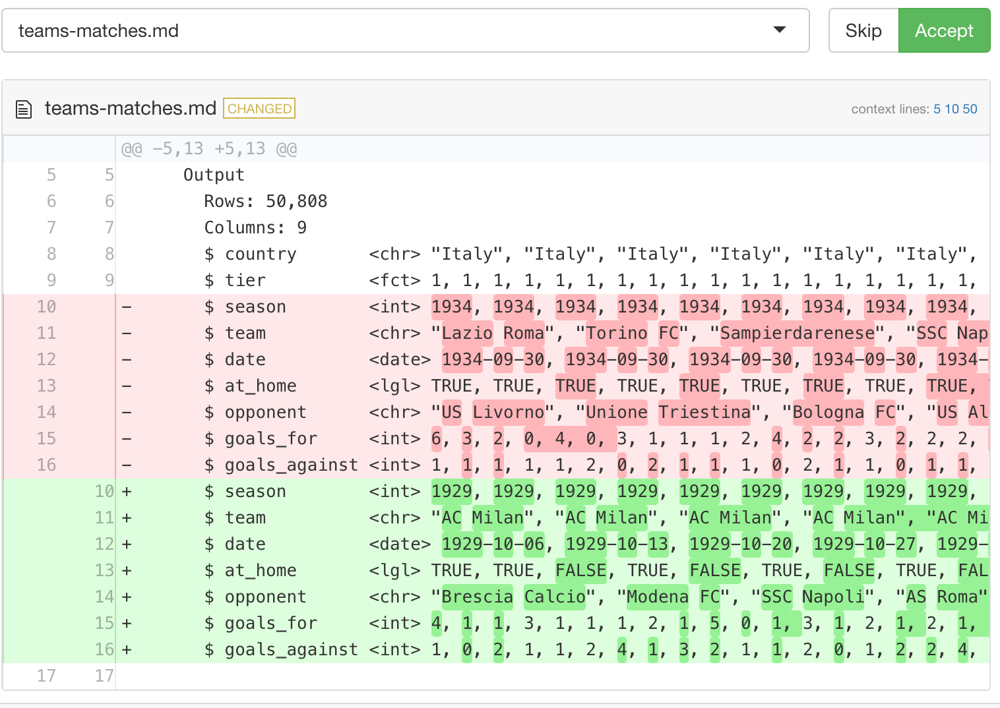

Day 2 Session 3: Tidy Eval
Emma Rand and Ian Lyttle
At the end of this section you will be able to:
dplyr::filter()
Vignettes:
Tidy eval (and non-standard evaluation generally in R) exists so that we can refer to data columns using bare names.
dplyr::filter(mtcars, cyl == 4)Welcome to more interesting.
There are two families of tidy-eval functions:
data-masking: evaluate variables in context of data frame
mtcars |>
dplyr::mutate(wt_kg = wt * 1000 / 2.2)tidy-select: specify columns within a data frame
mtcars |>
dplyr::select(starts_with("w"))using bare names, what we do in interactive programming:
mtcars |>
dplyr::mutate(wt_kg = wt * 1000 / 2.2)using strings, useful for Shiny :
mtcars |>
dplyr::mutate("wt_kg" := .data[["wt"]] * 1000 / 2.2)Write functions that:
dplyr::filter()
Out of scope:
rlang::quo(), rlang::enquo(), rlang::eval_tidy()
This is the simplest possible solution.
... as an argument,then you can pass the dots.
my_select <- function(.data, ...) {
dplyr::select(.data, ...)
}"2.3.1"
btt22::btt_reset_hard("2.3.1")
No new files.
uss_get_matches() to use dplyr::filter():
uss_get_matches("italy", season == 1929)equivalent to:
uss_get_matches("italy") |>
dplyr::filter(season == 1929)filter() resultsIn uss_get_matches():
Add ... to the formal arguments.
Pass the dots to dplyr::filter().
Document:
#' @inheritParams dplyr::filter
Add test (usethis::use_test())
.data, .env
[1] 32[1] 11[1] 11.data, .env (cont.)[1] 11[1] 32[1] 11The .data and .env pronouns are provided by {rlang} (Henry and Wickham 2022a).
For data-masking functions, make explicit how to evaluate variables.
To use them in your package:
usethis::use_import_from("rlang", c(".data", ".env"))"2.3.2"
btt22::btt_reset_hard("2.3.2")
Get new files, btt22::btt_get("2.3.2"):
teams-matches.Rtest-teams-matches.Rmatches: one row per match played
# A tibble: 1 × 8
country tier season date home visitor goals_home goals_visitor
<chr> <fct> <int> <date> <chr> <chr> <int> <int>
1 Italy 1 1929 1929-10-06 Juventus SSC Napoli 3 2teams-matches: one row per team playing a match
uss_make_teams_matches():
go through code, tests
document(), test(), check(), install()
italy_teams_matches <-
uss_get_matches("italy") |>
uss_make_teams_matches().env pronounat_home <- FALSE
teams_matches_visitor <-
data_matches |>
dplyr::rename(
team = "visitor",
opponent = "home",
goals_against = "goals_home",
goals_for = "goals_visitor"
) |>
dplyr::mutate(at_home = FALSE)instead of FALSE, use .env$at_home.
!!!
Used to splice a list or vector into a ... argument.
If you know JavaScript, it’s like the destructuring operator.
It works only with dynamic dots (a tidyverse construct).
!!! reflects ...
!!! evaluates the variable using the environment
"2.3.3"
btt22::btt_reset_hard("2.3.3")
No new files.
Use splice operator, !!!
teams_matches_home <-
data_matches |>
dplyr::rename(
team = "home",
opponent = "visitor",
goals_for = "goals_home",
goals_against = "goals_visitor"
) |>
dplyr::mutate(at_home = TRUE)look at rename_home() and rename_visitor().
Use !!! with teams_matches_home(), _visitor().
With dynamic dots you can name new columns using variables.
prefix <- "new"
mtcars |>
dplyr::rename("{prefix}_mpg" := "mpg")Two things to keep in mind:
:=, not =.To use in your package:
usethis::use_import_from("rlang", ":=")"2.3.4"
btt22::btt_reset_hard("2.3.4")
No new files.
usethis::use_import_from("rlang", ":=")
Use naming operator, :=
name_of_at_home <- "at_home"
teams_matches_visitor <-
data_matches |>
dplyr::rename(!!!rename_visitor()) |>
dplyr::mutate(at_home = FALSE)use name_of_at_home to name column in mutate()
Remember:
:=, not =
dplyr::across(): super usefulused inside data-masking verbs, e.g. summarise()
specify:
which columns to consider, using tidy-select
what function(s), if any, to apply
all_of(), any_of()
Exported by {dplyr} (Wickham et al. 2022); part of {tidyselect} (Henry and Wickham 2022b)
Used to disambiguate external- vector of column names:
placeholder <- c("wt", "mpg", "not_in_mtcars")"2.3.5"
btt22::btt_reset_hard("2.3.5")
No new files.
Arrange teams-matches by country, tier, season, team, date.
dplyr::arrange() is a data-masking function.
We want to supply the columns using tidy-select.
Use dplyr::across().
uss_make_teams_matches()Let’s add some code near the end to arrange the rows:
result <-
teams_matches_home |>
dplyr::bind_rows(teams_matches_visitor) |>
dplyr::select(cols_teams_matches()) |>
dplyr::arrange(
dplyr::across(
c("country", "tier", "season", "team", "date")
)
)Not using variable-names in tidy-select that could be confused for column-names; we don’t need all_of().
devtools::test() changes the snapshot testsnapshot_review('teams-matches')
accept the change
"2.3.6"
btt22::btt_reset_hard("2.3.6")
Get new files, btt22::btt_get("2.3.6"):
points.R, seasons.R
test-points.R, test-seasons.R
Used to aggregate performance over seasons.
uss_make_seasons_cumulative() takes a teams-matches data frame:
# A tibble: 612 × 9
country tier season team date at_home opponent goals_for goals_against
<chr> <fct> <int> <chr> <date> <lgl> <chr> <int> <int>
1 Italy 1 1929 AC Milan 1929-10-06 TRUE Brescia Calcio 4 1
2 Italy 1 1929 AC Milan 1929-10-13 TRUE Modena FC 1 0
3 Italy 1 1929 AC Milan 1929-10-20 FALSE SSC Napoli 1 2and returns a seasons data frame:
# A tibble: 612 × 12
# Groups: country, tier, season, team [18]
country tier season team date matches wins draws losses points goals_for goals_against
<chr> <fct> <int> <chr> <date> <int> <int> <int> <int> <int> <int> <int>
1 Italy 1 1929 AC Milan 1929-10-06 1 1 0 0 2 4 1
2 Italy 1 1929 AC Milan 1929-10-13 2 2 0 0 4 5 1
3 Italy 1 1929 AC Milan 1929-10-20 3 2 0 1 4 6 3This form is cumulative.
We need to build a function to take a teams-matches data frame:
# A tibble: 612 × 9
country tier season team date at_home opponent goals_for goals_against
<chr> <fct> <int> <chr> <date> <lgl> <chr> <int> <int>
1 Italy 1 1929 AC Milan 1929-10-06 TRUE Brescia Calcio 4 1
2 Italy 1 1929 AC Milan 1929-10-13 TRUE Modena FC 1 0
3 Italy 1 1929 AC Milan 1929-10-20 FALSE SSC Napoli 1 2and return a seasons data frame:
# A tibble: 18 × 12
# Groups: country, tier, season, team [18]
country tier season team date matches wins draws losses points goals_for goals_against
<chr> <fct> <int> <chr> <date> <int> <int> <int> <int> <int> <int> <int>
1 Italy 1 1929 Inter 1930-07-06 34 22 6 6 50 85 38
2 Italy 1 1929 Genova 189… 1930-07-06 34 20 8 6 48 63 39
3 Italy 1 1929 Juventus 1930-07-06 34 19 7 8 45 56 31This form is final.
Both the cumulative and the final can be derived from the same intermediate form:
# A tibble: 612 × 12
# Groups: country, tier, season, team [18]
country tier season team date matches wins draws losses points goals_for goals_against
<chr> <fct> <int> <chr> <date> <lgl> <lgl> <lgl> <lgl> <int> <int> <int>
1 Italy 1 1929 AC Milan 1929-10-06 TRUE TRUE FALSE FALSE 2 4 1
2 Italy 1 1929 AC Milan 1929-10-13 TRUE TRUE FALSE FALSE 2 1 0
3 Italy 1 1929 AC Milan 1929-10-20 TRUE FALSE FALSE TRUE 0 1 2group_by(): country, tier, season, team
cumulative:
date, cumsum(): matches, wins, draws, …final:
date, sum(): matches, wins, draws, …go through code, tests
document(), test(), check(), install()
italy_1929 <-
uss_get_matches("italy", season == 1929) |>
uss_make_teams_matches() |>
uss_make_seasons_cumulative()uss_make_seasons_final()same args as uss_make_seasons_cumulative()
#' @rdname uss_make_seasons_cumulative
#' @exportsame validation, test by uncommenting
use dplyr::summarise(), vs. dplyr::mutate()
sum quantities, rather than cumsum
summarise() the date differently
add example, add to vignette
{{}}
glue lets you interpolate strings:
greet <- function(name) {
glue::glue("Hello {name}")
}greet("there")Tidy eval lets you interpolate arguments:
mutate_greet <- function(.data, greeting) {
.data |>
dplyr::mutate(greeting = {{ greeting }})
}library("palmerpenguins")
my_name <- "Ian"
penguins |> mutate_greet(my_name) # works with vars in environmentpenguins |> mutate_greet(species) # works with vars in data# compute on data
penguins |> mutate_greet(paste(species, island)) # getting a little silly
penguins |>
mutate_greet(paste(species, island) |> greet())mutate_greet <- function(.data, greeting) {
.data |>
dplyr::mutate(greeting = {{ greeting }})
}{{}}:
"2.3.7"
btt22::btt_reset_hard("2.3.7")
Get new files, btt22::btt_get("2.3.7"):
plot.R, snapshot.R
test-plot.Rusethis::use_package("ggplot2")
Take a seasons (final) data frame for an English team:
# Groups: country, tier, season [89]
country tier season team date matches wins draws losses points goals_for goals_against
<chr> <fct> <int> <chr> <date> <int> <int> <int> <int> <int> <int> <int>
1 England 2 1920 Leeds Unit… 1921-05-07 42 14 10 18 38 40 45
2 England 2 1921 Leeds Unit… 1922-05-06 42 16 13 13 45 48 38
3 England 2 1922 Leeds Unit… 1923-05-05 42 18 11 13 47 43 36
4 England 2 1923 Leeds Unit… 1924-05-03 42 21 12 9 54 61 35
5 England 1 1924 Leeds Unit… 1925-05-02 42 11 12 19 34 46 59
6 England 1 1925 Leeds Unit… 1926-05-01 42 14 8 20 36 64 76
7 England 1 1926 Leeds Unit… 1927-05-07 42 11 8 23 30 69 88
8 England 2 1927 Leeds Unit… 1928-05-05 42 25 7 10 57 98 49What happens over time as we get promoted and relegated?
This sounds like a job for {ggplot2}!
go through code, tests
document(), test(), check(), install()
leeds_united <-
uss_get_matches("england") |>
uss_make_teams_matches() |>
dplyr::filter(team == "Leeds United") |>
uss_make_seasons_final() # A tibble: 89 × 12
# Groups: country, tier, season [89]
country tier season team date matches wins draws losses points goals_for goals_against
<chr> <fct> <int> <chr> <date> <int> <int> <int> <int> <int> <int> <int>
1 England 1 1924 Leeds Unit… 1925-05-02 42 11 12 19 34 46 59
2 England 1 1925 Leeds Unit… 1926-05-01 42 14 8 20 36 64 76
3 England 1 1926 Leeds Unit… 1927-05-07 42 11 8 23 30 69 88uss_plot_seasons_tiers(leeds_united) uss_plot_seasons_tiers()We want to specify what to plot on the y-axis. So let’s add an argument aes_y to the function:
.data$wins
#' @param aes_y
aes(y = .data$wins) using {{}}
devtools::test()
devtools::check()In uss_plot_seasons_tiers():
ggplot2::geom_point(
ggplot2::aes(
x = .data$season,
y = {{ aes_y }},
),
color = "#333333" # use something like #111111
) testthat::snapshot_review('plot/')
accept changes (or not), change back (or not)
There are a lot of tidy-eval tools:
across()
...
!!!
{{}}
For data-masking functions, use .data, .env pronouns:
Jenny Bryan motivates tidy eval at rstudio::conf(2019):
01:30 - scoped verbs, e.g. mutate_at(), now: across()
16:18 - enquo() and !!, now: {{}}
Lionel Henry talks about data-masking and tidy-select at rstudio::conf(2020).
Hadley gives a five-minute tour of the next layer of the tidy-eval onion.